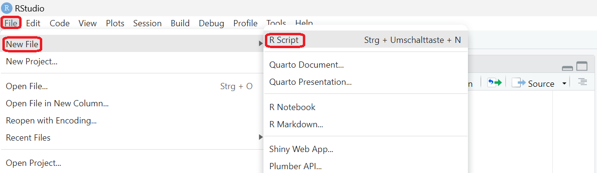
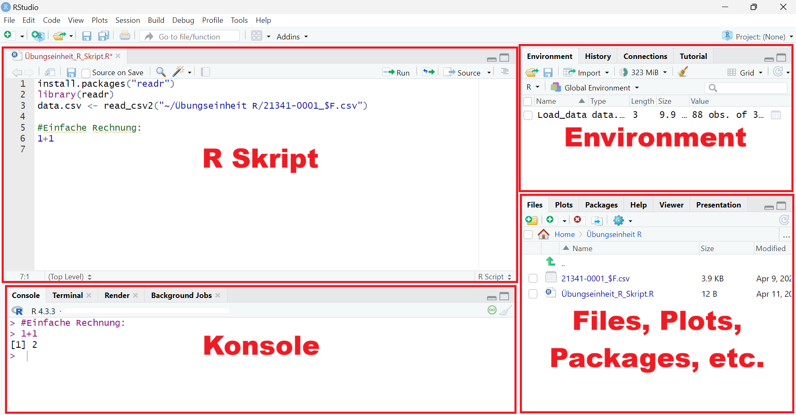

Übung: Arbeiten mit CSV-Dateien in R#
1 Vorwort#
Die folgende Lerneinheit soll Ihnen den Ersteinstieg in die
Computersprache R erleichtern.
Als Fallbeispiel wird eine CSV-Datei mit Rohdaten zum Personalstand an
Hochschulen eingelesen und ausgewertet.
Um die CSV-Datei herunterzuladen, klicken Sie bitte
hier
(Quelle: Statistisches Bundesamt 2022).
Installieren von R und R-Studio#
Um der Übungseinheit effektiv folgen zu können, installieren Sie bitte
vorab R. Zudem benötigen Sie eine geeignete Entwicklungsumgebung.
Hierfür bietet sich R-Studio an.
Zur Installation der Computersprache R und R-Studio geht es
hier.
2 Erste Schritte in R-Studio#
Neues R Skript anlegen
Öffnen Sie R-Studio.
Ein neues Skript, in dem Sie Befehle eingeben können, öffnen Sie unter Files: 
Abbildung 4: Anleitung zum Öffnen eines neuen R-Skriptes
Interface von R-Studio:

Abbildung 5: Interface von R-Studio
R Skript:
Im R Skript werden die Befehle eingegeben, welche R ausführen soll.
Um einen eingegebenen Befehl auszuführen, drücken Sie entweder
Strg + Enter oder Sie drücken mit der Maus auf den Run-Button in der
oberen rechten Ecke des Fensters. Ein Befehl ist z.B. 1+1. Das Skript
und dessen Befehle können abgespeichert werden und zu einem späteren
Zeitpunkt erneut geöffnet werden.
Console:
In der Console werden die Ergebnisse der Befehle angezeigt. Wenn Sie im
Skript 1+1 eingegeben und ausgeführt haben, erscheint in der Console
das Ergebnis 2. Sie können auch Befehle direkt in der Console
ausführen, diese werden dann jedoch nicht gespeichert.
Environment:
In der Environment werden geladene Dateien und Datensätze angezeigt.
Zudem sind hier selbst erstellte Listen etc. vorzufinden.
Files, Plots, Packages, etc.
In diesem Fenster werden verschiedene Funktionen angeboten. Über die
Fensterkachel Files können Sie Dateien anzeigen lassen und
Importieren (Dazu mehr im Abschnitt Einlesen von CSV Dateien).
Die Fensterkachel PLOTS zeigt Ihnen erstellte Grafiken an.
Die Fensterkachel Packages zeigt Ihnen alle installierten R-Packages
auf Ihrem Rechner an. Ein Package ist eine Ansammlung von
R-Befehlen. Manche Befehle können Sie nur ausführen, wenn Sie das
dazugehörige Package durch den Befehl
install.packages("*Packagename*") installiert und durch den Befehlt
library(*Packagename*)geladen haben (Dazu mehr im folgenden Abschnitt
Einleitung).
3 Einleitung#
Für Computersprachen gilt allgemein: Es gibt nie nur einen Weg zum Ziel. Unterschiedliche Befehle können Sie zum gleichen Ziel bringen. Dieses gilt auch für die folgenden angeführten Befehle.
Damit Sie die in diesem Skript angeführten Befehle verwenden können, müssen Sie das folgende Package installieren und laden:
install.packages("tidyverse")
library(tidyverse)
Einlesen von CSV Dateien#
Hierfür gibt es zwei Befehle: read.csv() oder read.csv2()
read.csv()wird verwendet, wenn die CSV Dateiwerte durch Kommata separiert werden.read.csv2()wird verwendet, wenn die CSV Dateiwerte durch Semicola separiert werden.
Fallbeispiel:
#Daten einlesen
data_csv <- read.csv2("21341-0001_$F.csv",header = FALSE)
Erklärung des Codes:
#Daten einlesen:
Durch das setzen eines#wird der folgende Inhalt in der Zeile nicht als Code interpretiert und somit auch nicht ausgeführt. Wenn Sie Textbausteine, Kommentare, Überschriften etc. in Ihrem R-Skript integrieren möchten, was für eine bessere Nachvollziehbarkeit Ihres Skriptes zu empfehlen ist, benutzen Sie immer das#-Symbol, um dies kenntlich zu machen. Ansonsten wird R einen Error ausgeben.read.csv2():
Die verwendete Datei ist durch Semicola separiert. Deswegen wird hierread.csv2()verwendet.Woraus ist dies ersichtlich? Durch Öffnen der Datei in der Console Ihres Rechners können Sie die verwendeten Trennzeichen erkennen.
"21341-0001_$F.csv":
Hier steht der Name der CSV-Datei, die geladen werden soll.Bei Verwendung von R-Studio: Sie sollten unter Files den Ordner aufrufen, in dem Ihre Dateien gespeichert sind. Nach klicken auf die gewünschte Datei, können Sie die Option Import Dataset… nutzen.
header = FALSE:
Die CSV Datei hat keine Überschriften, daher muss hier der Zusatz hinzugefügt werden.data_csv <-:
Damit Sie einen Befehl nicht immer wieder ausführen müssen, können Sie dem Befehl mittels eines Pfeils<-einem Namen zuordnen.Hier: “data_csv”. Nun können Sie in dem folgenden Skript nur noch den gesetzten Namen verwenden.
Alternative: Falls die Datei nicht unter “Files” auffindbar ist,
kann auch der Befehl choose.files() genutzt werden:
data_csv <- read.csv2(choose.files(),header = FALSE)
Tipp
Wenn Sie die Bedeutung und Syntax eines Befehls besser verstehen wollen, empfielt es sich, diesen Befehl im Handbuch nachzuschlagen. Hierzu setzen Sie ein ? vor den Befehl Ihres Interesses.
Beispiel:
?read.csv2
4 Daten sichten#
Es ist immer ratsam, einen ersten Blick auf die Daten zu werfen, um deren Struktur zu verstehen.
show(data_csv)
## V1 V2 V3
## 1 GENESIS-Tabelle: 21341-0001
## 2 Personal an Hochschulen: Deutschland, Jahre,
## 3 Personalgruppen nach Besch\xe4ftigungsverh\xe4ltnis, Geschlecht
## 4 Statistik des Hochschulpersonals
## 5 Deutschland
## 6 Personal an Hochschulen (Anzahl)
## 7 2020
## 8 Wissenschaftliches und k\xfcnstlerisches Personal m\xe4nnlich 247720
## 9 Wissenschaftliches und k\xfcnstlerisches Personal weiblich 167112
## 10 Wissenschaftliches und k\xfcnstlerisches Personal Insgesamt 414832
## 11 Hauptberufl. wissenschaftl. u. k\xfcnstler. Personal m\xe4nnlich 159567
## 12 Hauptberufl. wissenschaftl. u. k\xfcnstler. Personal weiblich 109708
## 13 Hauptberufl. wissenschaftl. u. k\xfcnstler. Personal Insgesamt 269275
## 14 Professoren m\xe4nnlich 36344
## 15 Professoren weiblich 12949
## 16 Professoren Insgesamt 49293
## 17 Dozenten und Assistenten m\xe4nnlich 2182
## 18 Dozenten und Assistenten weiblich 1546
## 19 Dozenten und Assistenten Insgesamt 3728
## 20 Wissenschaftliche und k\xfcnstlerische Mitarbeiter m\xe4nnlich 116004
## 21 Wissenschaftliche und k\xfcnstlerische Mitarbeiter weiblich 89383
## 22 Wissenschaftliche und k\xfcnstlerische Mitarbeiter Insgesamt 205387
## 23 Lehrkr\xe4fte f\xfcr besondere Aufgaben m\xe4nnlich 5037
## 24 Lehrkr\xe4fte f\xfcr besondere Aufgaben weiblich 5830
## 25 Lehrkr\xe4fte f\xfcr besondere Aufgaben Insgesamt 10867
## 26 Nebenberufl. wissenschaftl. u. k\xfcnstler. Personal m\xe4nnlich 88153
## 27 Nebenberufl. wissenschaftl. u. k\xfcnstler. Personal weiblich 57404
## 28 Nebenberufl. wissenschaftl. u. k\xfcnstler. Personal Insgesamt 145557
## 29 Gastprofessoren, Emeriti m\xe4nnlich 1534
## 30 Gastprofessoren, Emeriti weiblich 259
## 31 Gastprofessoren, Emeriti Insgesamt 1793
## 32 Lehrbeauftragte m\xe4nnlich 64492
## 33 Lehrbeauftragte weiblich 35238
## 34 Lehrbeauftragte Insgesamt 99730
## 35 Wissenschaftliche Hilfskr\xe4fte m\xe4nnlich 22127
## 36 Wissenschaftliche Hilfskr\xe4fte weiblich 21907
## 37 Wissenschaftliche Hilfskr\xe4fte Insgesamt 44034
## 38 Verwaltungs-, technisches und sonstiges Personal m\xe4nnlich 100320
## 39 Verwaltungs-, technisches und sonstiges Personal weiblich 243913
## 40 Verwaltungs-, technisches und sonstiges Personal Insgesamt 344233
## 41 Hauptberufl. Verwaltungs-, techn. u.sonst.Personal m\xe4nnlich 98247
## 42 Hauptberufl. Verwaltungs-, techn. u.sonst.Personal weiblich 240419
## 43 Hauptberufl. Verwaltungs-, techn. u.sonst.Personal Insgesamt 338666
## 44 Verwaltungspersonal m\xe4nnlich 25941
## 45 Verwaltungspersonal weiblich 83918
## 46 Verwaltungspersonal Insgesamt 109859
## 47 Bibliothekspersonal m\xe4nnlich 2443
## 48 Bibliothekspersonal weiblich 7308
## 49 Bibliothekspersonal Insgesamt 9751
## 50 Technisches Personal m\xe4nnlich 33025
## 51 Technisches Personal weiblich 26360
## 52 Technisches Personal Insgesamt 59385
## 53 Sonstiges Personal m\xe4nnlich 14422
## 54 Sonstiges Personal weiblich 41609
## 55 Sonstiges Personal Insgesamt 56031
## 56 Pflegepersonal m\xe4nnlich 15427
## 57 Pflegepersonal weiblich 63731
## 58 Pflegepersonal Insgesamt 79158
## 59 Arbeiter m\xe4nnlich -
## 60 Arbeiter weiblich -
## 61 Arbeiter Insgesamt -
## 62 Auszubildende m\xe4nnlich 6284
## 63 Auszubildende weiblich 16137
## 64 Auszubildende Insgesamt 22421
## 65 Praktikanten m\xe4nnlich 705
## 66 Praktikanten weiblich 1356
## 67 Praktikanten Insgesamt 2061
## 68 Sonstiges Personal f\xfcr Lehre und Forschung m\xe4nnlich -
## 69 Sonstiges Personal f\xfcr Lehre und Forschung weiblich -
## 70 Sonstiges Personal f\xfcr Lehre und Forschung Insgesamt -
## 71 Leitungs- und Verwaltungspersonal m\xe4nnlich -
## 72 Leitungs- und Verwaltungspersonal weiblich -
## 73 Leitungs- und Verwaltungspersonal Insgesamt -
## 74 Nebenberufl. Verwaltungs-, techn. u.sonst.Personal m\xe4nnlich 2073
## 75 Nebenberufl. Verwaltungs-, techn. u.sonst.Personal weiblich 3494
## 76 Nebenberufl. Verwaltungs-, techn. u.sonst.Personal Insgesamt 5567
## 77 Sonstige Hilfskr\xe4fte m\xe4nnlich 2073
## 78 Sonstige Hilfskr\xe4fte weiblich 3494
## 79 Sonstige Hilfskr\xe4fte Insgesamt 5567
## 80 Zeitweilig Besch\xe4ftigte m\xe4nnlich -
## 81 Zeitweilig Besch\xe4ftigte weiblich -
## 82 Zeitweilig Besch\xe4ftigte Insgesamt -
## 83 Insgesamt m\xe4nnlich 348040
## 84 Insgesamt weiblich 411025
## 85 Insgesamt Insgesamt 759065
## 86 __________
## 87 \xa9 Statistisches Bundesamt (Destatis), 2023
## 88 Stand: 04.04.2024 / 18:30:01
Alternative:
view(data_csv)
#oder
print(data_csv)
Dateiinhalt interpretieren#
Die Datei hat drei Spalten (V1, V2, V3):
V1: In den Zeilen 1-6 und 87-88 stehen die Metadaten der Datei. Hier finden Sie Infos zum Herausgeber, Inhalt der Daten, etc..
In den Zeilen 8-85 befinden sich Bezeichnung zum Angestelltenverhältnis des Hochschulpersonals (Dozent, Gastprofessoren, etc.).V2: Diese Spalte unterteilt die Beschäftigten nach Geschlecht (männlich, weiblich & Insgesamt).
V3: In den Zeilen 8-85 sind die jeweiligen absoluten Personalzahlen enthalten. In der Zeile 7 ist die Spaltenüberschrift “2020” gegeben. Diese bezieht sich auf das Erhebungsjahr der Daten.
Anmerkungen zu der Ausgangsdatei#
Es fallen hier direkt mehrere Punkte auf, welche die CSV-Datei schlechter maschinenlesbar machen:
Der Titel des Datensatzes ist nicht prägnant und verständlich.
Metadaten (Übergeordnete Informationen über die vorliegenden Daten) sollten nicht in der Tabelle selbst auftauchen sondern separiert in dem dafür vorgesehenen Metadatenbereich abgespeichert werden. Die CSV-Datei sollte neben der Kopfzeile und der Inhaltsdaten keine weiteren Informationen enthalten.
Spalten sollten immer Überschriften haben. Dies fehlt hier für V1 und V2.
Auf Umlaute und Sonderzeichen ist zu verzichten. Dies führt zu einer fehlerhaften Anzeige. In V1 Zeile 87 wird das Sonderzeichen “Copyright” nicht logisch erkannt und als “.” angezeigt. In den Spalten V1 und V2 werden Wörter mit Umlauten wie “männlich”, ““für”, “Lehrkräfte”, etc. alle fehlerhaft angezeigt. Um größtmögliche Kompatibilität zu anderen Programmen zu gewährleisten, sollten Dateien immer der UTF-8-Zeichenkodierung folgen. Andernfalls können Probleme bei der maschinellen Verarbeitung entstehen, wie Sie in der Tabelle erkennen können.
Wenn Sie mehr zum Thema “hochwertiger Datenaufbau” wissen möchten, werfen Sie gerne einen Blick in den NQDM-Leitfaden.
5 Daten aufbereiten#
Im folgenden Abschnitt werden die zuletzt erwähnten Qualitätsmängel der Datendarstellung behoben und die Daten zur Auswertung vorbereitet.
Problem der Zeichenkodierung
Im Default interpretiert R Dokumente als UTF-8 (Unicode) kodiert.
Dies ist die Ausgangseinstellung und R-Skripte werden mit dieser
Zeichenkodierung ebenfalls abgespeichert, solange Sie dies nicht manuell
ändern. Beim Laden von nicht UTF-8 kodierten Dateien kann es jedoch zu
Anzeigeproblemen kommen, wie in der Tabelle feststellbar. Siehe
beispielsweise Zelle V2 Zeile 8:
## [1] "m\xe4nnlich"
Solch eine Anzeige spricht dafür, dass ein ISO 8859-1 (“Latin-1”) kodiertes Dokument inklusive Umlauten als UTF-8 interpretiert wird. Damit Ihre Datei kompatibel und gut maschinell lesbar für andere Programme bleibt, sollten Sie stets eine UFT-8 Kodierung beibehalten. Eine bessere Anzeige können Sie trotzdem mit folgenden Schritten erreichen.
Hinweis
Je nach Einstellung von R-Studio kommt dieses Problem ggf. nicht auf und Umlaute werden korrekt angezeigt.
Lösungsansätze bei falscher Anzeige
Sie können die Datei als ISO 8859-1 (“Latin-1”) kodiert laden. Hierzu
müssen Sie zum bekannten Einlesebefehl nur den Zusatz
encoding = "latin1" hinzufügen, damit R weiß, welche
Zeichenkodierung im Dokument verwendet wurde:
data_csv_clean <- read.csv2("21341-0001_$F.csv", header = FALSE, encoding = "latin1")
Wenn Sie schnell überprüfen möchten, ob die Umlaute nun korrekt
angezeigt werden, können Sie den Befehl head() benutzen. Hierdurch
werden nur die ersten Zeilen Ihrer Tabelle angezeigt.
head(data_csv_clean)
## V1 V2 V3
## 1 GENESIS-Tabelle: 21341-0001
## 2 Personal an Hochschulen: Deutschland, Jahre,
## 3 Personalgruppen nach Beschäftigungsverhältnis, Geschlecht
## 4 Statistik des Hochschulpersonals
## 5 Deutschland
## 6 Personal an Hochschulen (Anzahl)
An dem Wort “Beschäftigungsverältnis” in Zeile 3 sehen Sie, dass die CSV-Datei nun korrekt gelesen wird. Wie bereits erwähnt sollte Sie auf Umlaute jedoch in Gänze verzichten.
Alternative:
Um Probleme mit der Zeichenkodierung zu vermeiden, speichern Sie am
besten schon im Vorhinein Ihre Datei mit UTF-8 Kodierung ab. Dies können
Sie meist direkt unter den Speichern unter... Dateiformaten auswählen:

Abbildung 6: Abspeichern mit UTF-8 Zeichenkodierung
Umlaute entfernen#
Mittels des Befehls str_replace_all können Sie einzelne Buchstaben in
Ihrer Tabelle ersetzen. Dies ist jedoch nur separat für einzelne Spalten
möglich.
data_csv_clean$V1 <- str_replace_all(data_csv_clean$V1, c("ä" = "ae", "ö" = "oe", "ü" ="ue", "ß" ="ss"))
data_csv_clean$V2 <- str_replace_all(data_csv_clean$V2, c("ä" = "ae", "ö" = "oe", "ü" ="ue", "ß" ="ss"))
Erklärung des Codes:
data_csv_utf8$V1:
Durch das Anhängen eines$- Zeichens an den Namen der Tabelle signalisieren Sie R, dass Sie sich nur auf einen bestimmte Variable - hier die Spalte V1 - beziehen möchten.str_replace_all:
Suchen und ersetzen von einzelnen Zeichen(-ketten) in ihrer Tabelle.c("ä" = "ae", "ö" = "oe",...):
Der Befehlcerstellt einen Vektor. Ein Vektor kombiniert von Ihnen festgelegte Zahlen- oder Zeichenketten (letzteres wird auch “String” genannt). Ein String ist z.B. c(“Apfel”, “Birne”, “Kiwi”).
Im hier verwendeten Zusammenhang mitstr_replace_all()wird R befohlen, alle “ä” durch “ae” zu ersetzen und alle “ö” durch “oe” usw..
Ergebnis ansehen:
Über die show() -Funktion könnten Sie jetzt die Tabelle erneut sichten
und überprüfen, ob die Zeichenumkodierung funktioniert hat. Wenn Ihre
Tabelle jedoch sehr lang ist (so wie in diesem Fall) und Sie nur einen
Teil Ihrer Tabelle betrachten möchten, können Sie sich auch nur
bestimmte Bereiche anzeigen lassen. Hierfür setzen Sie hinter den
Dateinamen eckige Klammern und bestimmen den
Wertebereich:[*Zeilenbereich*,*Spaltenbereich*].
*Hinweis: Wenn Sie einen Wertebereich angeben wollen, platzieren Sie
zwischen den ersten und letzten Wert einen Doppelpunkt: und * R
inkludiert alle dazwischenliegenden Werte (“von… bis…”). Ein Komma
separiert Bereiche.
Allgemeines Beispiel:
1:5
## [1] 1 2 3 4 5
Ein Vektor mit Wertebereichen:
c(1:5, 11:15)
## [1] 1 2 3 4 5 11 12 13 14 15
Angewendet auf die vorliegende CSV-Tabelle:
show(data_csv_clean[8:20,1:3])
## V1 V2 V3
## 8 Wissenschaftliches und kuenstlerisches Personal maennlich 247720
## 9 Wissenschaftliches und kuenstlerisches Personal weiblich 167112
## 10 Wissenschaftliches und kuenstlerisches Personal Insgesamt 414832
## 11 Hauptberufl. wissenschaftl. u. kuenstler. Personal maennlich 159567
## 12 Hauptberufl. wissenschaftl. u. kuenstler. Personal weiblich 109708
## 13 Hauptberufl. wissenschaftl. u. kuenstler. Personal Insgesamt 269275
## 14 Professoren maennlich 36344
## 15 Professoren weiblich 12949
## 16 Professoren Insgesamt 49293
## 17 Dozenten und Assistenten maennlich 2182
## 18 Dozenten und Assistenten weiblich 1546
## 19 Dozenten und Assistenten Insgesamt 3728
## 20 Wissenschaftliche und kuenstlerische Mitarbeiter maennlich 116004
Wie Sie erkennen können, wurden die Umlaute erfolgreich umgeschrieben.
Tabelle unterteilen#
Damit die Tabelle eine bessere Struktur erlangt, empfiehlt sich eine Separierung in Metadaten und Tabellendaten.
Metadaten <- data_csv_clean[c(1:6, 87:88), 1]
Tabellendaten <- data_csv_clean[8:85, 1:3]
Spaltenüberschriften setzen#
Der Befehl colnames()ermöglicht es Ihnen Spaltenüberschriften zu
setzen.
Sie können dies entweder für jede Spalte mit einem einzelnen Befehl durchführen:
colnames(Tabellendaten)[1] <- "Angestelltenverhaeltnis"
Oder alle Spaltenüberschriften mittels eines Vektors gleichzeitig neu setzen:
colnames(Tabellendaten) <- c("Angestelltenverhaeltnis", "Geschlecht", "Angestelltenzahl_2020")
#Ergebnis ansehen
head(Tabellendaten)
## Angestelltenverhaeltnis Geschlecht Angestelltenzahl_2020
## 8 Wissenschaftliches und kuenstlerisches Personal maennlich 247720
## 9 Wissenschaftliches und kuenstlerisches Personal weiblich 167112
## 10 Wissenschaftliches und kuenstlerisches Personal Insgesamt 414832
## 11 Hauptberufl. wissenschaftl. u. kuenstler. Personal maennlich 159567
## 12 Hauptberufl. wissenschaftl. u. kuenstler. Personal weiblich 109708
## 13 Hauptberufl. wissenschaftl. u. kuenstler. Personal Insgesamt 269275
Damit die Nummerierung der Tabellenzeilen nicht bei der Zahl 8 startet,
empfiehlt sich die Nummerierung der Zeilen neu zu setzen. Herzu kann der
Befehl row.names eingesetzt werden:
row.names(Tabellendaten) <- 1:78
Alternative:
Direkte manuelle Bearbeitung in der Tabelle:
edit(Tabellendaten)
Achtung!
Es empfiehlt sich auf Befehle wie diese zu verzichten, da die Änderungen nicht im R Skript oder der Console angezeigt und somit nicht nachvollzogen werden können!
6 Auswertung#
Der folgende Abschnitt thematisiert Auswertungsmöglichkeiten mit Fokus auf Untergruppierungen und Filterfunktionen.
Variablenklassen bestimmen#
Damit Sie Ihre Daten adäquat auswerten können, müssen Sie sich über die Struktur und Klasse der Variablen bewusst sein.
Die wichtigsten Variablenklassen im Überblick:
integer: Ganze Zahlen.
Beispiel: 1,2,5.numeric: Zahl mit Kommastellen.
Beispiel: 1.99, 2.33, 5.00.character: Zeichenketten bzw. Strings.
Beispiel: “Hallo”, “Apfel”, “Hannah”.factor: Kategoriale Variablen.
Beispiel: “schlecht”, “gut”, “sehr gut”
Die Variablenklasse ist ausschlaggebend dafür, wie Sie die
Variablendaten auswerten können. Beispielsweise können Sie mit einer
numeric -Variable rechnen, mit einer character -Variable jedoch
nicht.
Variablenklassen bestimmen im Code:
Der Befehl class()gibt uns die jeweilige Klasse des Objektes wieder:
class(Tabellendaten$Angestelltenverhaeltnis) #sollte als character oder factor gelesen werden
## [1] "character"
class(Tabellendaten$Geschlecht) #sollte als character oder factor gelesen werden
## [1] "character"
class(Tabellendaten$Angestelltenzahl_2020) #sollte als numerisch oder integer gelesen werden
## [1] "character"
Die Variablenklassen für “Angestelltenverhältnis” und “Geschlecht” sind
passend. Die Variable “Angestelltenzahl_2020” wird jedoch auch als
character interpretiert. Dies muss manuell geändert werden, da sonst
bestimmte Auswertungen nicht möglich sind und Fehler entstehen können.
Tipp
Im Environment Fenster können Sie die Variablenklassen ebenfalls schnell einsehen.

Abbildung 7: Environment-Fenster in R-Studio
Fallbeispiel: Betrachten Sie die Funktion max(), welche den
Maximalwert in der jeweiligen Spalte zurückgeben soll. Hinweis:
na.rm = TRUE muss hinzugefügt werden, damit die nicht vorhandenen
Werte nicht berücksichtigt werden, ansonsten kommt es zu einem Error.
max(Tabellendaten$Angestelltenzahl_2020, na.rm = TRUE)
## [1] "99730"
Wenn Sie jedoch einen Blick in die Tabelle werfen, sehen Sie schnell, dass es mehrere Angestelltenzahlen über 100.000 gibt. Die ausgegebene Zahl kann also nicht stimmen!
Wie kann es zu solch einem Fehler kommen?
Da die Variable “Angestelltenzahl_2020” als character interpretiert
wird, ändert sich auch die Bedeutung der Funktion max(). Die Funkion
max() gibt nun nicht mehr den Maximalwert zurück, sondern den
niedrigsten Platz in alphabetischer Sortierung. Nur wenn wenn die Werte
in der Tabelle auch als Zahlen (also numerisch/integer) von R
gelesen werden, gibt die Funktion max() den Maximalwert der Spalte
zurück.
Variablenklasse ändern#
Hierfür überspeichern Sie die Daten der jeweiligen Spalte mit den exakt
selben Daten, nur das Sie durch den Befehl as.integer die Klasse der
Variable ändern. Wenn Sie die Klasse in numerisch ändern wollen würden
Sie as.numeric usw. verwenden.
Tabellendaten$Angestelltenzahl_2020 <- as.integer(Tabellendaten$Angestelltenzahl_2020)
Überprüfen Sie gegebenenfalls erneut die Klasse:
class(Tabellendaten$Angestelltenzahl_2020)
## [1] "integer"
Wenn Sie nun noch einmal die Beispielfunktion max() heranziehen, dann
bekommen Sie jetzt durch neuer Klassenzugehörigkeit der Variable den
Maximalwert angezeigt:
max(Tabellendaten$Angestelltenzahl_2020, na.rm = TRUE)
## [1] 759065
Merken: Überprüfen Sie immer die Art der Variablenklasse, welche R Ihren Daten zuweist und ändern Sie dies gegebenenfalls, um Fehler zu vermeiden.
Wichtig!
Überprüfen Sie immer die Art der Variablenklasse, welche R Ihren Daten zuweist und ändern Sie dies gegebenenfalls, um Fehler zu vermeiden.
Variablen hinzufügen#
Eine gute Kategorisierung Ihrer Daten ist notwendig, um effizient zu
filtern. Hierzu müssen Sie die Struktur der Daten nachvollziehen
können.
Um die einzelnen Ausprägung der Variable “Angestelltenverhaeltnis” zu
sichten, bietet Ihnen R den Befehl unique():
unique(Tabellendaten$Angestelltenverhaeltnis)
## [1] "Wissenschaftliches und kuenstlerisches Personal"
## [2] " Hauptberufl. wissenschaftl. u. kuenstler. Personal"
## [3] " Professoren"
## [4] " Dozenten und Assistenten"
## [5] " Wissenschaftliche und kuenstlerische Mitarbeiter"
## [6] " Lehrkraefte fuer besondere Aufgaben"
## [7] " Nebenberufl. wissenschaftl. u. kuenstler. Personal"
## [8] " Gastprofessoren, Emeriti"
## [9] " Lehrbeauftragte"
## [10] " Wissenschaftliche Hilfskraefte"
## [11] "Verwaltungs-, technisches und sonstiges Personal"
## [12] " Hauptberufl. Verwaltungs-, techn. u.sonst.Personal"
## [13] " Verwaltungspersonal"
## [14] " Bibliothekspersonal"
## [15] " Technisches Personal"
## [16] " Sonstiges Personal"
## [17] " Pflegepersonal"
## [18] " Arbeiter"
## [19] " Auszubildende"
## [20] " Praktikanten"
## [21] " Sonstiges Personal fuer Lehre und Forschung"
## [22] " Leitungs- und Verwaltungspersonal"
## [23] " Nebenberufl. Verwaltungs-, techn. u.sonst.Personal"
## [24] " Sonstige Hilfskraefte"
## [25] " Zeitweilig Beschaeftigte"
## [26] "Insgesamt"
Wie Sie erkennen können, ist die Variable “Angestelltenverhaeltnis” recht unübersichtlich, da sie verschiedene Unterkategorien enthält. Bei Betrachtung der einzelnen Positionen ist jedoch nicht erkennbar, zu welcher Überkategorie die Position gehört.
Bei genauerer Betrachtung der Tabelle fällt auf, dass es drei Ebenen gibt:
Ebene: “Wissenschaftliches und künstlerisches Personal” und “Verwaltungs-, technisches und sonstiges Personal”
Ebene: “Hauptberuflich” und “Nebenberuflich”
Ebene: Die einzelnen Positionen der Berufsbezeichnungen z.B. “Professoren”, “Dozenten und Assistenten”, etc.
Für eine übersichtlichere Struktur in der Tabelle, kann für die ersten zwei Ebenen jeweils eine neue Variable erstellt werden. Hierdurch werden zwei neue Spalten zur Tabelle hinzugefügt und Sie können dann bei Betrachtung einer einzelnen Zeile alle wichtigen Informationen herauslesen, was derzeit nicht möglich ist.
Neue Variablen erstellen:
Da die Struktur es nicht erlaubt, die neuen Variablen durch Referenz auf
die bereits vorhandenen Variablen zu erzeugen, müssen die neuen
Variablen manuell strukturiert werden.
Erzeugen Sie hierfür zunächst neue Variablen und setzen Sie den Inhalt erst mal auf unbekannt (NA).
#1.Ebene: Neue Variable "Personalkategorie"
Tabellendaten$Personalkategorie <- c(NA)
#2.Ebene: Neue Variable "Art der Anstellung"
Tabellendaten$Art_der_Anstellung <- c(NA)
Der Spalteninhalt muss nun manuell eingetragen werden.
Achtung: Diese Weise ist leider recht fehleranfällig, ist jedoch durch
den Aufbau der Datei, ohne komplexere Funktionen zu benutzen, nicht
anders möglich.
Merken!: Wenn Sie Daten generieren, strukturieren Sie diese immer gut. Dies erleichtert Ihnen selbst, aber auch allen anderen, die Ihre Daten verwenden, dass Arbeiten! Eine gute Struktur von Daten liefert der Tidy- Data Ansatz (Kapitel ??)
Wichtig!
Wenn Sie Daten generieren, strukturieren Sie diese immer gut. Dies erleichtert Ihnen selbst, aber auch allen anderen, die Ihre Daten verwenden, dass Arbeiten! Eine gute Struktur von Daten liefert der Tidy- Data Ansatz (s. Kapitel Tidy Data).
Einpflegen des Variableninhalts
#1.Ebene
Tabellendaten$Personalkategorie[76:78] <- "Insgesamt"
Tabellendaten$Personalkategorie[1:30] <- "Wissenschaftliches und künstlerisches Personal"
Tabellendaten$Personalkategorie[31:75] <- "Verwaltungs-, technisches und sonstiges Personal"
#2.Ebene
Tabellendaten$Art_der_Anstellung[c(1:3, 31:33, 76:78)] <- "Insgesamt"
Tabellendaten$Art_der_Anstellung[c(4:18,34:66)] <- "Hauptberuflich"
Tabellendaten$Art_der_Anstellung[c(19:30,67:75)] <- "Nebenberuflich"
Ergebnis ansehen:
show(Tabellendaten)
## Angestelltenverhaeltnis Geschlecht
## 1 Wissenschaftliches und kuenstlerisches Personal maennlich
## 2 Wissenschaftliches und kuenstlerisches Personal weiblich
## 3 Wissenschaftliches und kuenstlerisches Personal Insgesamt
## 4 Hauptberufl. wissenschaftl. u. kuenstler. Personal maennlich
## 5 Hauptberufl. wissenschaftl. u. kuenstler. Personal weiblich
## 6 Hauptberufl. wissenschaftl. u. kuenstler. Personal Insgesamt
## 7 Professoren maennlich
## 8 Professoren weiblich
## 9 Professoren Insgesamt
## 10 Dozenten und Assistenten maennlich
## 11 Dozenten und Assistenten weiblich
## 12 Dozenten und Assistenten Insgesamt
## 13 Wissenschaftliche und kuenstlerische Mitarbeiter maennlich
## 14 Wissenschaftliche und kuenstlerische Mitarbeiter weiblich
## 15 Wissenschaftliche und kuenstlerische Mitarbeiter Insgesamt
## 16 Lehrkraefte fuer besondere Aufgaben maennlich
## 17 Lehrkraefte fuer besondere Aufgaben weiblich
## 18 Lehrkraefte fuer besondere Aufgaben Insgesamt
## 19 Nebenberufl. wissenschaftl. u. kuenstler. Personal maennlich
## 20 Nebenberufl. wissenschaftl. u. kuenstler. Personal weiblich
## 21 Nebenberufl. wissenschaftl. u. kuenstler. Personal Insgesamt
## 22 Gastprofessoren, Emeriti maennlich
## 23 Gastprofessoren, Emeriti weiblich
## 24 Gastprofessoren, Emeriti Insgesamt
## 25 Lehrbeauftragte maennlich
## 26 Lehrbeauftragte weiblich
## 27 Lehrbeauftragte Insgesamt
## 28 Wissenschaftliche Hilfskraefte maennlich
## 29 Wissenschaftliche Hilfskraefte weiblich
## 30 Wissenschaftliche Hilfskraefte Insgesamt
## 31 Verwaltungs-, technisches und sonstiges Personal maennlich
## 32 Verwaltungs-, technisches und sonstiges Personal weiblich
## 33 Verwaltungs-, technisches und sonstiges Personal Insgesamt
## 34 Hauptberufl. Verwaltungs-, techn. u.sonst.Personal maennlich
## 35 Hauptberufl. Verwaltungs-, techn. u.sonst.Personal weiblich
## 36 Hauptberufl. Verwaltungs-, techn. u.sonst.Personal Insgesamt
## 37 Verwaltungspersonal maennlich
## 38 Verwaltungspersonal weiblich
## 39 Verwaltungspersonal Insgesamt
## 40 Bibliothekspersonal maennlich
## 41 Bibliothekspersonal weiblich
## 42 Bibliothekspersonal Insgesamt
## 43 Technisches Personal maennlich
## 44 Technisches Personal weiblich
## 45 Technisches Personal Insgesamt
## 46 Sonstiges Personal maennlich
## 47 Sonstiges Personal weiblich
## 48 Sonstiges Personal Insgesamt
## 49 Pflegepersonal maennlich
## 50 Pflegepersonal weiblich
## 51 Pflegepersonal Insgesamt
## 52 Arbeiter maennlich
## 53 Arbeiter weiblich
## 54 Arbeiter Insgesamt
## 55 Auszubildende maennlich
## 56 Auszubildende weiblich
## 57 Auszubildende Insgesamt
## 58 Praktikanten maennlich
## 59 Praktikanten weiblich
## 60 Praktikanten Insgesamt
## 61 Sonstiges Personal fuer Lehre und Forschung maennlich
## 62 Sonstiges Personal fuer Lehre und Forschung weiblich
## 63 Sonstiges Personal fuer Lehre und Forschung Insgesamt
## 64 Leitungs- und Verwaltungspersonal maennlich
## 65 Leitungs- und Verwaltungspersonal weiblich
## 66 Leitungs- und Verwaltungspersonal Insgesamt
## 67 Nebenberufl. Verwaltungs-, techn. u.sonst.Personal maennlich
## 68 Nebenberufl. Verwaltungs-, techn. u.sonst.Personal weiblich
## 69 Nebenberufl. Verwaltungs-, techn. u.sonst.Personal Insgesamt
## 70 Sonstige Hilfskraefte maennlich
## 71 Sonstige Hilfskraefte weiblich
## 72 Sonstige Hilfskraefte Insgesamt
## 73 Zeitweilig Beschaeftigte maennlich
## 74 Zeitweilig Beschaeftigte weiblich
## 75 Zeitweilig Beschaeftigte Insgesamt
## 76 Insgesamt maennlich
## 77 Insgesamt weiblich
## 78 Insgesamt Insgesamt
## Angestelltenzahl_2020 Personalkategorie Art_der_Anstellung
## 1 247720 Wissenschaftliches und künstlerisches Personal Insgesamt
## 2 167112 Wissenschaftliches und künstlerisches Personal Insgesamt
## 3 414832 Wissenschaftliches und künstlerisches Personal Insgesamt
## 4 159567 Wissenschaftliches und künstlerisches Personal Hauptberuflich
## 5 109708 Wissenschaftliches und künstlerisches Personal Hauptberuflich
## 6 269275 Wissenschaftliches und künstlerisches Personal Hauptberuflich
## 7 36344 Wissenschaftliches und künstlerisches Personal Hauptberuflich
## 8 12949 Wissenschaftliches und künstlerisches Personal Hauptberuflich
## 9 49293 Wissenschaftliches und künstlerisches Personal Hauptberuflich
## 10 2182 Wissenschaftliches und künstlerisches Personal Hauptberuflich
## 11 1546 Wissenschaftliches und künstlerisches Personal Hauptberuflich
## 12 3728 Wissenschaftliches und künstlerisches Personal Hauptberuflich
## 13 116004 Wissenschaftliches und künstlerisches Personal Hauptberuflich
## 14 89383 Wissenschaftliches und künstlerisches Personal Hauptberuflich
## 15 205387 Wissenschaftliches und künstlerisches Personal Hauptberuflich
## 16 5037 Wissenschaftliches und künstlerisches Personal Hauptberuflich
## 17 5830 Wissenschaftliches und künstlerisches Personal Hauptberuflich
## 18 10867 Wissenschaftliches und künstlerisches Personal Hauptberuflich
## 19 88153 Wissenschaftliches und künstlerisches Personal Nebenberuflich
## 20 57404 Wissenschaftliches und künstlerisches Personal Nebenberuflich
## 21 145557 Wissenschaftliches und künstlerisches Personal Nebenberuflich
## 22 1534 Wissenschaftliches und künstlerisches Personal Nebenberuflich
## 23 259 Wissenschaftliches und künstlerisches Personal Nebenberuflich
## 24 1793 Wissenschaftliches und künstlerisches Personal Nebenberuflich
## 25 64492 Wissenschaftliches und künstlerisches Personal Nebenberuflich
## 26 35238 Wissenschaftliches und künstlerisches Personal Nebenberuflich
## 27 99730 Wissenschaftliches und künstlerisches Personal Nebenberuflich
## 28 22127 Wissenschaftliches und künstlerisches Personal Nebenberuflich
## 29 21907 Wissenschaftliches und künstlerisches Personal Nebenberuflich
## 30 44034 Wissenschaftliches und künstlerisches Personal Nebenberuflich
## 31 100320 Verwaltungs-, technisches und sonstiges Personal Insgesamt
## 32 243913 Verwaltungs-, technisches und sonstiges Personal Insgesamt
## 33 344233 Verwaltungs-, technisches und sonstiges Personal Insgesamt
## 34 98247 Verwaltungs-, technisches und sonstiges Personal Hauptberuflich
## 35 240419 Verwaltungs-, technisches und sonstiges Personal Hauptberuflich
## 36 338666 Verwaltungs-, technisches und sonstiges Personal Hauptberuflich
## 37 25941 Verwaltungs-, technisches und sonstiges Personal Hauptberuflich
## 38 83918 Verwaltungs-, technisches und sonstiges Personal Hauptberuflich
## 39 109859 Verwaltungs-, technisches und sonstiges Personal Hauptberuflich
## 40 2443 Verwaltungs-, technisches und sonstiges Personal Hauptberuflich
## 41 7308 Verwaltungs-, technisches und sonstiges Personal Hauptberuflich
## 42 9751 Verwaltungs-, technisches und sonstiges Personal Hauptberuflich
## 43 33025 Verwaltungs-, technisches und sonstiges Personal Hauptberuflich
## 44 26360 Verwaltungs-, technisches und sonstiges Personal Hauptberuflich
## 45 59385 Verwaltungs-, technisches und sonstiges Personal Hauptberuflich
## 46 14422 Verwaltungs-, technisches und sonstiges Personal Hauptberuflich
## 47 41609 Verwaltungs-, technisches und sonstiges Personal Hauptberuflich
## 48 56031 Verwaltungs-, technisches und sonstiges Personal Hauptberuflich
## 49 15427 Verwaltungs-, technisches und sonstiges Personal Hauptberuflich
## 50 63731 Verwaltungs-, technisches und sonstiges Personal Hauptberuflich
## 51 79158 Verwaltungs-, technisches und sonstiges Personal Hauptberuflich
## 52 NA Verwaltungs-, technisches und sonstiges Personal Hauptberuflich
## 53 NA Verwaltungs-, technisches und sonstiges Personal Hauptberuflich
## 54 NA Verwaltungs-, technisches und sonstiges Personal Hauptberuflich
## 55 6284 Verwaltungs-, technisches und sonstiges Personal Hauptberuflich
## 56 16137 Verwaltungs-, technisches und sonstiges Personal Hauptberuflich
## 57 22421 Verwaltungs-, technisches und sonstiges Personal Hauptberuflich
## 58 705 Verwaltungs-, technisches und sonstiges Personal Hauptberuflich
## 59 1356 Verwaltungs-, technisches und sonstiges Personal Hauptberuflich
## 60 2061 Verwaltungs-, technisches und sonstiges Personal Hauptberuflich
## 61 NA Verwaltungs-, technisches und sonstiges Personal Hauptberuflich
## 62 NA Verwaltungs-, technisches und sonstiges Personal Hauptberuflich
## 63 NA Verwaltungs-, technisches und sonstiges Personal Hauptberuflich
## 64 NA Verwaltungs-, technisches und sonstiges Personal Hauptberuflich
## 65 NA Verwaltungs-, technisches und sonstiges Personal Hauptberuflich
## 66 NA Verwaltungs-, technisches und sonstiges Personal Hauptberuflich
## 67 2073 Verwaltungs-, technisches und sonstiges Personal Nebenberuflich
## 68 3494 Verwaltungs-, technisches und sonstiges Personal Nebenberuflich
## 69 5567 Verwaltungs-, technisches und sonstiges Personal Nebenberuflich
## 70 2073 Verwaltungs-, technisches und sonstiges Personal Nebenberuflich
## 71 3494 Verwaltungs-, technisches und sonstiges Personal Nebenberuflich
## 72 5567 Verwaltungs-, technisches und sonstiges Personal Nebenberuflich
## 73 NA Verwaltungs-, technisches und sonstiges Personal Nebenberuflich
## 74 NA Verwaltungs-, technisches und sonstiges Personal Nebenberuflich
## 75 NA Verwaltungs-, technisches und sonstiges Personal Nebenberuflich
## 76 348040 Insgesamt Insgesamt
## 77 411025 Insgesamt Insgesamt
## 78 759065 Insgesamt Insgesamt
Unterkategorisieren#
Eine Unterkategorisierung (auch Sub-Sampling gennant) bietet sich auch insbesondere für die Variable “Geschlecht” an.
unique(Tabellendaten$Geschlecht)
## [1] "maennlich" "weiblich" "Insgesamt"
Durch das Aufführen der Variablenausprägung "Insgesamt" wird die
Tabelle recht unübersichtlich. Es empfiehlt sich das sub-samplen der
Tabelle nach den verschiedenen Geschlechtsausprägungen:
#Geschlecht
Tabelle_maennlich <- subset(Tabellendaten, Geschlecht == "maennlich")
Tabelle_weiblich <- subset(Tabellendaten, Geschlecht == "weiblich")
Tabelle_Insgesamt <- subset(Tabellendaten, Geschlecht == "Insgesamt")
#Ergbnis ansehen
head(Tabelle_Insgesamt)
## Angestelltenverhaeltnis Geschlecht Angestelltenzahl_2020 Personalkategorie Art_der_Anstellung
## 3 Wissenschaftliches und kuenstlerisches Personal Insgesamt 414832 Wissenschaftliches und künstlerisches Personal Insgesamt
## 6 Hauptberufl. wissenschaftl. u. kuenstler. Personal Insgesamt 269275 Wissenschaftliches und künstlerisches Personal Hauptberuflich
## 9 Professoren Insgesamt 49293 Wissenschaftliches und künstlerisches Personal Hauptberuflich
## 12 Dozenten und Assistenten Insgesamt 3728 Wissenschaftliches und künstlerisches Personal Hauptberuflich
## 15 Wissenschaftliche und kuenstlerische Mitarbeiter Insgesamt 205387 Wissenschaftliches und künstlerisches Personal Hauptberuflich
## 18 Lehrkraefte fuer besondere Aufgaben Insgesamt 10867 Wissenschaftliches und künstlerisches Personal Hauptberuflich
Wenn Sie nun z.B. aus der Tabelle_Insgesamt die zweite Spalte entfernen möchten, da diese redundant ist, können Sie die Spalte aus dem Subsample entfernen:
Tabelle_Insgesamt <- subset(Tabelle_Insgesamt, select= c(-Geschlecht))
#Ergebnis ansehen
head(Tabelle_Insgesamt)
## Angestelltenverhaeltnis Angestelltenzahl_2020 Personalkategorie Art_der_Anstellung
## 3 Wissenschaftliches und kuenstlerisches Personal 414832 Wissenschaftliches und künstlerisches Personal Insgesamt
## 6 Hauptberufl. wissenschaftl. u. kuenstler. Personal 269275 Wissenschaftliches und künstlerisches Personal Hauptberuflich
## 9 Professoren 49293 Wissenschaftliches und künstlerisches Personal Hauptberuflich
## 12 Dozenten und Assistenten 3728 Wissenschaftliches und künstlerisches Personal Hauptberuflich
## 15 Wissenschaftliche und kuenstlerische Mitarbeiter 205387 Wissenschaftliches und künstlerisches Personal Hauptberuflich
## 18 Lehrkraefte fuer besondere Aufgaben 10867 Wissenschaftliches und künstlerisches Personal Hauptberuflich
Tabellendaten filtern#
Alternativ zum subset-Befehl kann mit dem Befehl filter gearbeitet
werden.
Sie können Ihre Tabelle mittels der filter-Funktion filtern und so
nach belieben die Tabelle nur gezielte Inhalte anzeigen lassen.
Hierzu können Sie verschiedene Operatoren und Funktionen nutzen:
Mathematische Operatoren:
==(Ist gleich)!=(Ist nicht gleich)<(Kleiner als)<=(Kleiner-Gleich)>(Größer als)>=(größer-Gleich)
Beispiel:
filter(Tabelle_Insgesamt, Tabelle_Insgesamt$Angestelltenzahl_2020 <= 5000)
## Angestelltenverhaeltnis Angestelltenzahl_2020 Personalkategorie Art_der_Anstellung
## 1 Dozenten und Assistenten 3728 Wissenschaftliches und künstlerisches Personal Hauptberuflich
## 2 Gastprofessoren, Emeriti 1793 Wissenschaftliches und künstlerisches Personal Nebenberuflich
## 3 Praktikanten 2061 Verwaltungs-, technisches und sonstiges Personal Hauptberuflich
Logische Operatoren:
!(logisches NICHT)&(logisches UND)|(logisches ODER)
Beispiel:
filter(Tabellendaten, Tabellendaten$Personalkategorie == "Wissenschaftliches und künstlerisches Personal" & Tabellendaten$Geschlecht == "weiblich" )
## Angestelltenverhaeltnis Geschlecht Angestelltenzahl_2020 Personalkategorie Art_der_Anstellung
## 1 Wissenschaftliches und kuenstlerisches Personal weiblich 167112 Wissenschaftliches und künstlerisches Personal Insgesamt
## 2 Hauptberufl. wissenschaftl. u. kuenstler. Personal weiblich 109708 Wissenschaftliches und künstlerisches Personal Hauptberuflich
## 3 Professoren weiblich 12949 Wissenschaftliches und künstlerisches Personal Hauptberuflich
## 4 Dozenten und Assistenten weiblich 1546 Wissenschaftliches und künstlerisches Personal Hauptberuflich
## 5 Wissenschaftliche und kuenstlerische Mitarbeiter weiblich 89383 Wissenschaftliches und künstlerisches Personal Hauptberuflich
## 6 Lehrkraefte fuer besondere Aufgaben weiblich 5830 Wissenschaftliches und künstlerisches Personal Hauptberuflich
## 7 Nebenberufl. wissenschaftl. u. kuenstler. Personal weiblich 57404 Wissenschaftliches und künstlerisches Personal Hauptberuflich
## 8 Gastprofessoren, Emeriti weiblich 259 Wissenschaftliches und künstlerisches Personal Hauptberuflich
## 9 Lehrbeauftragte weiblich 35238 Wissenschaftliches und künstlerisches Personal Hauptberuflich
## 10 Wissenschaftliche Hilfskraefte weiblich 21907 Wissenschaftliches und künstlerisches Personal Hauptberuflich
Verwenden von Funktionen:
Beispiel: Ausgabe des kleinsten Wertes mittels er min() -Funktion
filter(Tabellendaten, Tabellendaten$Angestelltenzahl_2020 == min(Tabellendaten$Angestelltenzahl_2020, na.rm = TRUE))
## Angestelltenverhaeltnis Geschlecht Angestelltenzahl_2020 Personalkategorie Art_der_Anstellung
## 1 Gastprofessoren, Emeriti weiblich 259 Wissenschaftliches und künstlerisches Personal Nebenberuflich
Mögliche Probleme?
Wenn via der Variable Angestelltenverhaeltnis gefilterte werden soll, gibt R folgenden Output:
#Beispiel: Filtern nach "Professoren"
filter(Tabellendaten, Tabellendaten$Angestelltenverhaeltnis == "Professoren")
##1 Angestelltenverhaeltnis Geschlecht Angestelltenzahl_2020 Personalkategorie Art_der_Anstellung
<0 Zeilen> (oder row.names mit Länge 0)
Wenn Sie jedoch in den Datensatz schauen, sehen Sie, dass Professoren unter Angestelltenverhaltnis mit aufgelistet werden.
Warum werden “Professoren” nicht gefunden?
Das Problem besteht darin, dass die Ausgangsdatei Leerzeichen vor dem Wort Professoren (und auch vor anderen Bezeichnungen von Angestelltenverhältnissen) enthält.
Mit dem Befehl trimws()können Sie die vorgestellten Leerzeichen vor den Bezeichnungen entfernen:
Tabellendaten$Angestelltenverhaeltnis <- trimws(Tabellendaten$Angestelltenverhaeltnis)
Führen Sie nun erneut die Filtersuche durch und Sie erhalten das korrekte Ergebnis:
filter(Tabellendaten, Tabellendaten$Angestelltenverhaeltnis == "Professoren")
## Angestelltenverhaeltnis Geschlecht Angestelltenzahl_2020 Personalkategorie Art_der_Anstellung
##1 Professoren männlich 36344 Wissenschaftliches und künstlerisches Personal Hauptberuflich
##2 Professoren weiblich 12949 Wissenschaftliches und künstlerisches Personal Hauptberuflich
##3 Professoren Insgesamt 49293 Wissenschaftliches und künstlerisches Personal Hauptberuflich
Sortieren von Tabellendaten#
Sie können Tabellen mittels des order()-Befehls nach belieben
sortieren.
Beispiel:
Tabelle_Insgesamt_Sortiert <- Tabelle_Insgesamt[order(Tabelle_Insgesamt$Angestelltenzahl_2020, decreasing = TRUE),]
#Ergebnis ansehen
head(Tabelle_Insgesamt_Sortiert)
## Angestelltenverhaeltnis Angestelltenzahl_2020 Personalkategorie Art_der_Anstellung
## 78 Insgesamt 759065 Insgesamt Insgesamt
## 3 Wissenschaftliches und kuenstlerisches Personal 414832 Wissenschaftliches und künstlerisches Personal Insgesamt
## 33 Verwaltungs-, technisches und sonstiges Personal 344233 Verwaltungs-, technisches und sonstiges Personal Insgesamt
## 36 Hauptberufl. Verwaltungs-, techn. u.sonst.Personal 338666 Verwaltungs-, technisches und sonstiges Personal Hauptberuflich
## 6 Hauptberufl. wissenschaftl. u. kuenstler. Personal 269275 Wissenschaftliches und künstlerisches Personal Hauptberuflich
## 15 Wissenschaftliche und kuenstlerische Mitarbeiter 205387 Wissenschaftliches und künstlerisches Personal Hauptberuflich